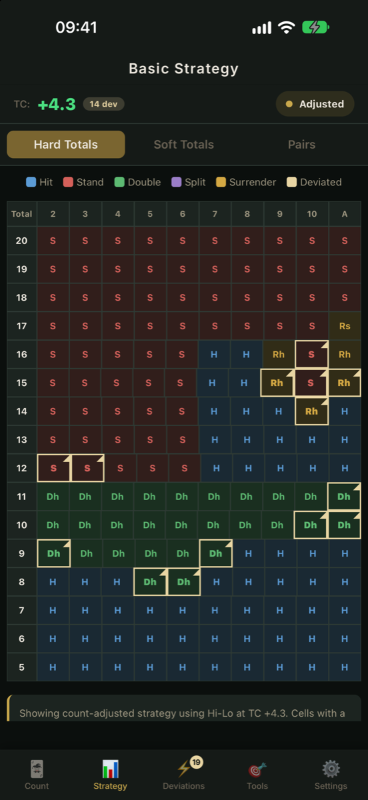
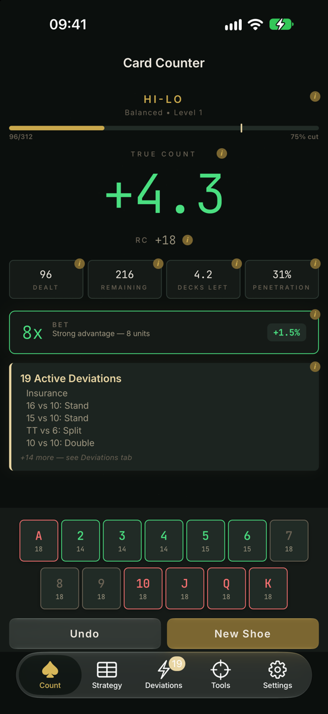
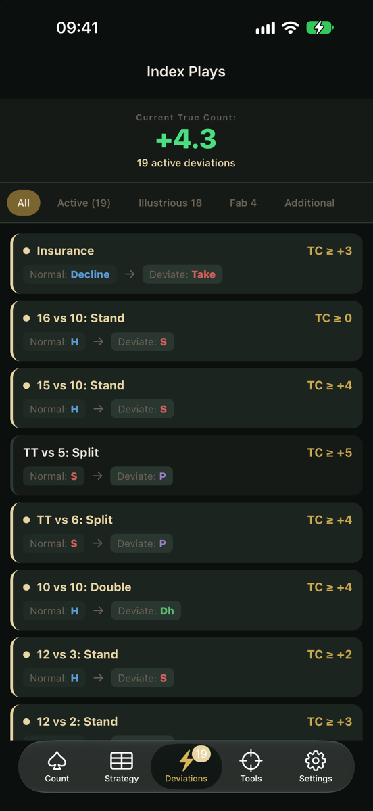
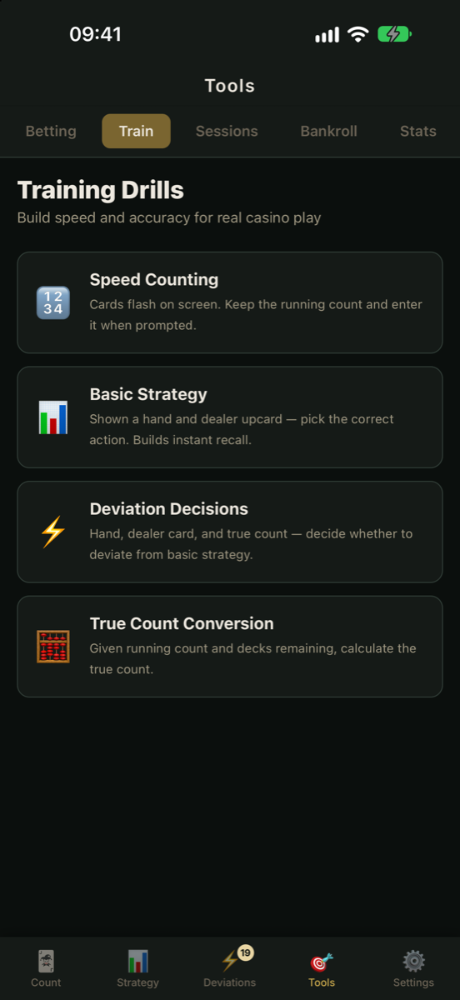
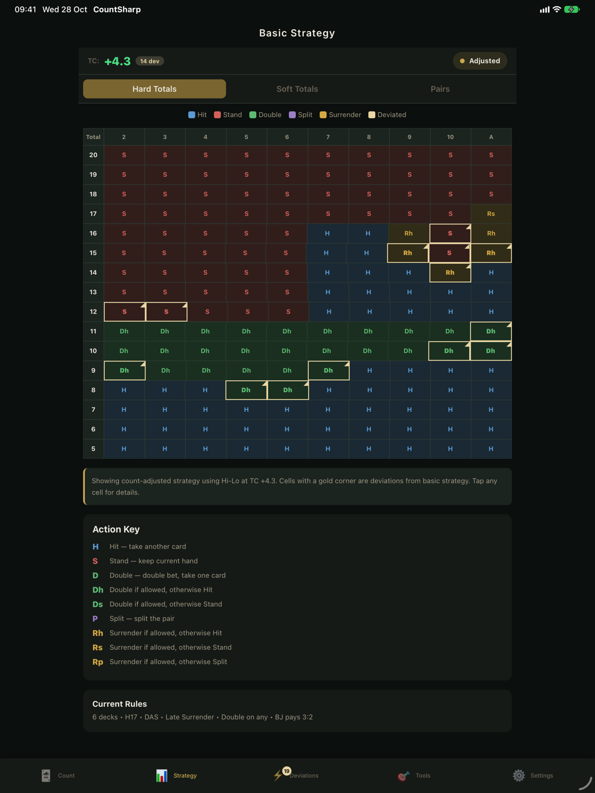

Real-time count tracking
Tap cards as they're dealt and see the running count and true count update instantly, with a clear signal when the count turns in your favour.
The complete blackjack card counting trainer. Track the count, learn basic strategy, master index plays and size your bets, all in one app.
iPhone · iPad · Mac




Tap cards as they're dealt and see the running count and true count update instantly, with a clear signal when the count turns in your favour.
Hi-Lo, Hi-Opt I, Hi-Opt II, Omega II, Zen Count, Wong Halves, KO, Red 7 and Ace-Five. Start simple and step up when you're ready.
Complete basic strategy for hard totals, soft totals and pairs, generated for your exact table rules and colour-coded for instant recall.
The Illustrious 18 and Fab 4 surrenders built in, with the plays that apply at the current true count highlighted for you.
See how many units to bet at every true count, with edge estimates and Kelly Criterion sizing.
Four drills to build speed and accuracy: speed counting, basic strategy, deviations and true count conversion. Your results are saved so you can track progress.
Work out risk of ruin, recommended bankroll and an optimal bet ramp, and use the variance simulator to see the swings to expect.
Record each session's result, duration, table conditions and notes, and follow your total result and units per hour.
Set decks, soft 17, doubling, splitting, surrender, blackjack payout and penetration. Strategy and deviations update to match.
One app for every screen. On iPad and Mac, the big display gives the strategy charts, deviations and bankroll tools room to breathe.

No account, no internet connection, no tracking. Everything you enter stays on your device. Read the privacy policy.